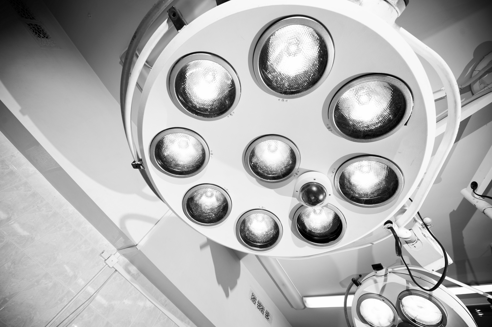
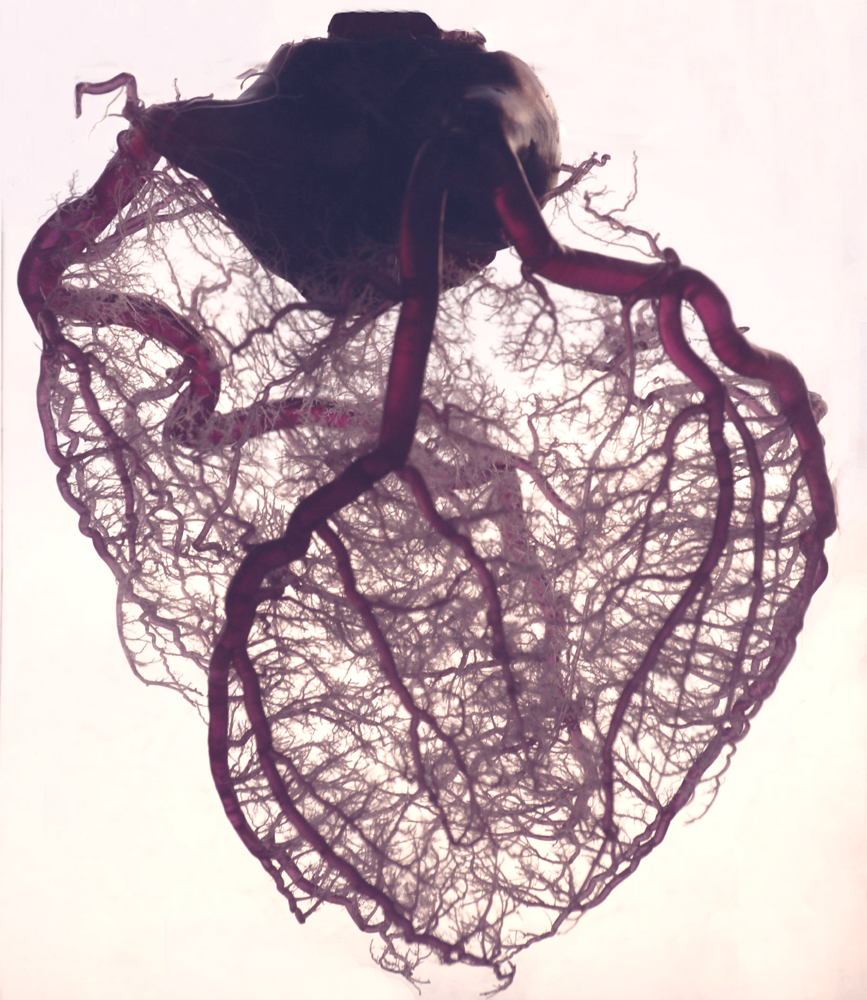
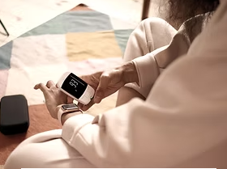

全外顯子疾病風險檢測
Whole exome sequencing (WES) disease risk testing

癌症疾病：
檢測男性180種、女性194種癌症和其他與腫瘤相關的疾病，共334個相關基因。

心血管疾病：
檢測16種先天性心臟缺陷、心肌病變和心律不整共115個相關基因。
神經退化疾病：
檢測一般失智症、路易氏體失智症、早發性阿茲海默症、晚發性阿茲海默症與帕金森氏症等疾病共72個相關基因。

代謝疾病：
檢測原發性高血壓、動脈粥狀硬化、中風、遺傳性腦血管病變、第二型糖尿病、肥胖與痛風等共94個基因。